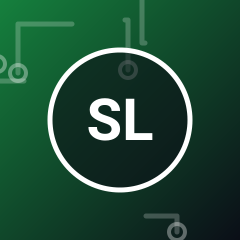
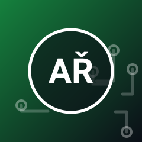

Exhibice: publikum proti profíkům
Sobota 5. 6. · – (120 min)
Arcade · Pasáž
Losovaní diváci nastoupí proti profesionálním týmům – s několika znevýhodněními pro profesionály. Přihlásit se můžete na místě.
Účinkující

Stříbrní Lvi
E-sportový tým z Prahy
Team Nordwind
E-sportový tým z Hamburku

Adam Řezníček
E-sportový komentátor